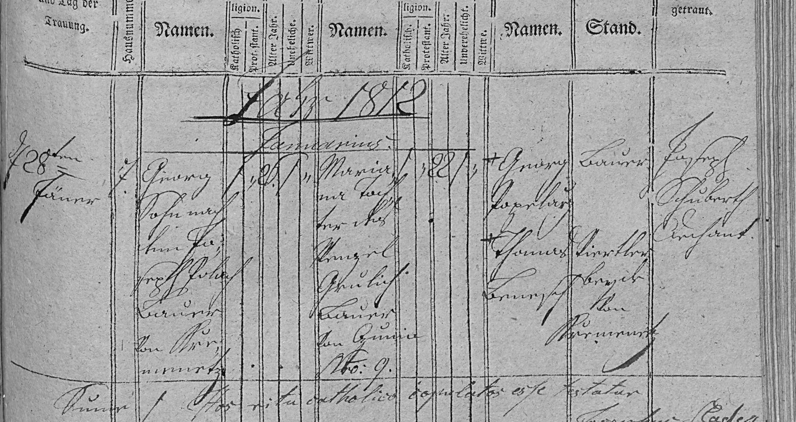

Jiří (26 l.), syn zemřelého Josefa Poláka, sedláka z Křemence, Křemenec čp. 7 × Marianna (22 l.), dcera Václava Paulíka, sedláka z Čunína čp. 9. Svědci Jiří Koplar (?), sedlák, a Tomáš …, čtvrtláník, oba z Křemence; oddával Josef Schubert, kaplan.

Text z matriky a překlad
Přepis originálu
[Jahr 1812, Januarius] 28ten Jänner [Hausnummer] 7 [Bräutigam] Georg, Sohn nach dem † Joseph Polach, Bauer von Křemenetz – kath., 26, unverehelicht [Braut] Marianne, Tochter des Wenzel Paulich, Bauer von Čunin No. 9 – kath., 22, unverehelicht [Beistände] Georg Koplar (?), Bauer; Thomas Schmid (?), Viertler, beyde von Kremenetz [Hat getraut] Joseph Schubert, Caplan Hos rite catholice copulatos esse testatur …
Překlad
28. ledna 1812 byli v Konici oddáni Jiří (26 let), syn zemřelého Josefa Poláka, sedláka v Křemenci (čp. 7), a Marianna (22 let), dcera Václava Paulíka, sedláka v Čuníně čp. 9. Svědci: Jiří Koplar (?), sedlák, a Tomáš … , čtvrtláník, oba z Křemence.